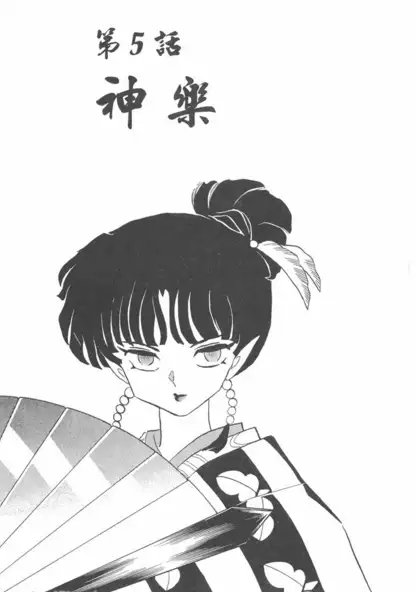
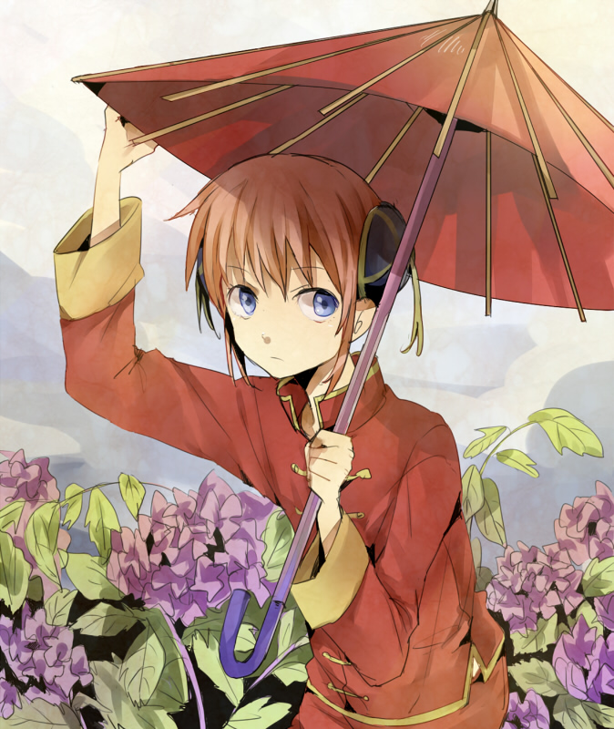
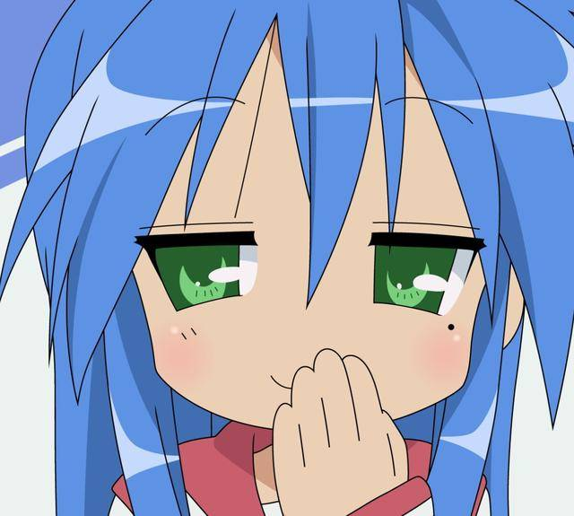

花名册
-
风-神乐(犬夜叉)

神乐，日本漫画《犬夜叉》及其衍生作品中的女性角色。奈落的第二个分身，神无的妹妹。 受奈落命令保护鬼蜘蛛，阻挠犬夜叉一行人寻找四魂之玉，是犬夜叉等人所面对的主要敌人之一。
-
月兔族-神乐(银魂)

神乐（日语：神楽（かぐら））是空知英秋创作的漫画《银魂》及其衍生作品的登场角色，女主人公。
-
洒水姬-樱井泉

来自日本漫画《日常》中1年Q班的英文老师，担任辅导老师，24岁。性格柔弱，天然呆，常紧张到全身是汗。
-
哆啦美
哆啦美(日语：ドラミ)，旧译为小叮铃，是藤子·F·不二雄的漫画作品《哆啦A梦》中登场的猫型机器人。
-
泉此方

泉此方是四格漫画《幸运星》及其衍生作品中的主人公。热爱动画及游戏，是个彻头彻尾的御宅族。
-
掌中萌虎-逢坂大河
逢坂大河是日本轻小说及其改编动画《龙与虎》中的女主角。 是有着一头长发和非常精致的脸庞，身高为143.6厘米的娇小身材特点的美少女。
-
灼眼的夏娜
夏娜，日本轻小说《灼眼的夏娜》及其衍生作品中的女主角。
-
天真·珈百璃·怀特
天真·珈百璃·怀特是漫画《珈百璃的堕落》及其衍生作品中的女性角色，是天使学校首席毕业生。 她的成绩优异，为了进一步修行而前往下界，在与人类社会接触后开始渐渐蜕变成宅女。
-
米斯蒂娅·萝蕾拉
米斯蒂娅·萝蕾拉，系列作品《东方Project》中的角色，夜雀妖怪，拥有用歌声迷惑人程度的能力。 于《东方永夜抄》中作为二面BOSS首次登场。
-
萝莎莉娅·阿琳
根据编年史剧情，梦想是成为偶像，自称“伏特加女孩”， 但其实由于未成年不能喝酒，关于伏特加的味道是怎样的，“唔...不知道呢~也许和蛋糕上的樱桃一样美味吧！”
-
莉莉娅·阿琳
是萝莎莉娅的妹妹， 自幼体弱多病，曾险些死于第四次崩坏期间崩坏兽围攻， 依靠融合崩坏兽因子得以存活，但却因此落下了贪睡的毛病，下午七点就会睡着。
-
木下秀吉
木下秀吉是文月学园二年级F班的一名男生(❌)，但相貌却酷似美少女，因此有“秀吉的性别就是秀吉”的说法，人气非常高，在男生女生里都很受欢迎（甚至男生更多）。
-
姬路瑞希
原本的学习成绩是全年第二，但在分班考试时，因为中途发高烧而离席，所以考试全部零分，被分配到F班去。 和岛田美波是很要好的朋友，因为喜欢吉井明久所以也是情敌。
-
高木さん
高木是漫画《擅长捉弄的高木同学》及其衍生作品中的女主角。坐在西片的右侧，时常捉弄西片。喜欢西片，曾经在西片耳边对他说喜欢他，但通过语境以这是谎言来糊弄西片。
-
CharlieMorningstar
地狱的老大路西法的女儿“地狱公主”，喜爱歌唱与舞蹈，天真、幽默，但充满激情， 相信每个恶魔的心中都有彩虹，想要开设一家“快乐客栈”。
-
梅花十三
擅长使用双刀流和梅花镖，发辫上的短刃可以用于攻击。 性格冷漠、好强，有着超越常人的果敢和强烈的使命感，内心其实很柔软。
-
小林托尔
来自异世界的龙（雌性），能够自由变化成人类的形态，平时居住在家中，最喜欢小林桑。在人间会变成金发双马尾造型的女仆来照顾小林。 不光想得到小林的心，还想要得到小林的身体，并且希望小林能吃下她的尾巴肉。
-
上井艾露玛
本身来自另一个世界的独角龙（原型为娜迦），在人间的形象是一位黑发蓝瞳的年轻OL，戴眼镜，有时会露出眉心的独角。 追求与人类的和谐共处，性格正直而严格；问题是脑子不太灵光，遇事容易信以为真，这方面常受到托尔的戏弄。
-
伊露露
来自异世界的龙，幼年时期与人类儿童玩耍由于那个世界人类跟龙族的矛盾，最后伊露露的父母全部死在人类手中。为了报复而来到人类世界破坏城市。 在与托尔的战斗中不幸失败，被送回养伤。最后暂时寄居在小林家里。
-
椎名真白
个性温和而倔强，天然黑，天然呆、三无，（呆萌），有极度的依赖性。 英日混血儿，拥有通透白皙的肌肤，微微的凤眼看起来有些成熟，迈步走起来像西表山猫。 初次登场时，空太就被她的美丽的外貌深深吸引。
-
芽衣
崩坏结束后，逆熵并入天命，芽衣加入天命，担任对崩坏第一小队队长。 圣芙蕾雅学园恢复建制后，天命小队承担起培养新人的任务，两支特殊小队被拆成四支小队，芽衣任第三小队的队长。
-
血小板
看起来是只有幼儿园或者小学低年生大小的稚嫩少女（相对于一般细胞个头比较小）。 负责在血管受到损伤（例如擦伤）的时候集合起来封闭伤口。干燥以后就变成痂。
-
秋本丽子

内敛而大方体贴的大小姐，还算平易近人，偶尔还是会任性一下。阿两是少数常惹她生气的人。 个性好强，身手矫捷，曾被阿两骂“男人婆”，喜好开快车，是第一位打阿两的女警。
-
立华奏
在死后世界的学校中担任着学生会会长。 被“死后世界战线”的人称为“天使”，不过自己否认这一说法。喜欢吃麻婆豆腐，是个程序媛。 因为所在世界是死后的世界，所以可以毫不留情的用Handsonic“捅死”男主(音无结弦)。
-
古河渚
古河渚性格乐观温柔，想创立演剧部但是一直缺乏自信。 在樱花飞舞的日子里与男主角冈崎朋也相遇，在动漫的渚线中最终创立演剧部成为部长，并与朋也交往。
-
蝶祈
谜一样的三无少女，女主角，和男主角樱满集有着密不可分的联系，在tv第一集与集相遇开始了一段纠结的爱情。 楪祈的枪法很好，又是著名的歌姬，血液和歌声拥有抑制病变虚空的效果，对于料理却并不擅长。
-
钉宫四萌-露易丝

《零之使魔》中的角色，有着夹杂金色的粉红长发、茶褐色的眼瞳。 因为魔法糟糕而总是被同学取笑。 每次施法都以失败和爆炸告终，因为零成功率和零属性，因此被戏称为“零之露易丝”，实际上是少见的“虚无”系统的魔法师。
-
名刀-阿朱罗丸
优一郎契约的黑鬼系列的鬼咒装备中的鬼。对百夜优一郎混杂了爱与恨的感情，并服从百夜优一郎。 人物是一位长发正太，尖耳红瞳，实力强大，性格直率，告知百夜优一郎体内有非人类的部分。
-
克鲁鲁·采佩西
克鲁鲁·采佩西，女，日本漫画《终结的炽天使》及其衍生作品中的角色。吸血鬼的上位始祖之一，为第三位始祖。 吸血鬼第三都市桑古奈姆的支配者，日本吸血鬼的女王，曾赐予了濒死百夜米迦尔自己的血而使其成为吸血鬼。
魂淡们啊，当困惑的时候就来看看吧
- 女孩最美的妆容就是微笑! ——银魂
- 真的是朋友的话，就能分担任何痛苦。当朋友走上歧路时，哪怕要损失掉这段友谊也在所不惜，一定要拉他回来。 ——银魂
- 世界上可是有着就算弄脏自己的手也要保护的东西啊，正因为是这双已经被玷污的眼睛才知道，有些东西是不能被玷污的。 ——银魂
- 袜子可以穿的宽松，但做人的道理要牢牢记住! ——银魂
- 眼泪是个好东西啊，它能冲刷你所有的痛苦，但越长大越发现不是所有的痛都会被冲刷掉的，所以，当你越难过的时候越要微笑 ——银魂
- 满嘴幼稚的理想，爱情之东西就是幻想，真正的爱情都是从幻想破灭之后开始的。 ——银魂
- 太阳的光芒越是强烈映射出的影子也会愈加黑暗。 ——银魂
- 人生啊，就像肥皂泡一样，风一吹就呼呼地飞上了天，注意到的时候，却啪地一下消失了。就在即将破裂的瞬间，想要自己飞得更高，但回过神来的时候，却总是来不及。 ——银魂
- 我们跟你们这些少爷不一样，我们光是活着就已经拼尽全力了。 ——银魂
- 今宵明月，绝不西沉。只此美梦，不再苏醒。从今往后，生生世世。长相厮守，为你立誓。 ——银魂
- 你以为整天死死活活的很帅吗？真正帅的是就算丢死人了，被别人踩在泥地里，也要努力活下去。 ——银魂
- 没关系，我已经决定吃自己喜欢的东西，过短命的人生了。 ——银魂
- 有阳光的地方就会有阴影，所以有阴影的地方也一定会有阳光。绝望的颜色越是浓厚，在哪里也一定会存在耀眼的希望之光。 ——银魂
- 你算什么黑道上混的，我可是在“人生”这条黑道上混了好多年！ ——银魂
- 关于自己的生活，我和你都不是读者，而是作者。至少结局，还是能自己说了算的。 ——银魂
- 比起年轻美丽什么的来说，即使折了腰，还能笔直而走的活下去才是更艰难的。让灵魂保持美丽才是真正困难的事情啊！ ——银魂
- 人生若跌倒谷底，剩下的便只有往上爬了。 ——银魂
- 看到在哭泣的女孩子和自己喜欢的女孩子，一定会去追那个哭泣的女孩。 ——银魂
- 靠辛勤工作赚钱，就算吃拌饭料配饭也好吃！ ——银魂
- 要救人救必须要有杀人的胆识，为了大义，最终只会连能救的都救不了。 ——银魂
- 真正重要的东西,总是没有的人比拥有的更清楚。 ——银魂
- 所谓父子就是连令人讨厌的地方也一样 ——银魂
- 人生五十年，如梦又似彩票 ——银魂
- 大人是很卑鄙的，只要看到有利可图，动作比谁都快 ——银魂
- 胆小的人对于出乎意料的事情总能做好万全的准备 ——银魂
- 请你答应我，你会幸福，那样我可以恨你，恨得理直气壮一点 ——银魂
Never-Mind-Bro
二次元浓度鉴赏
- Everyday Normal../music/NormalShit.flac
- For the Damaged Coda../music/FortheDamagedCoda.mp3
- Candace - Candace,Baljeet and Buford../music/CandaceBaljeetAndBuford.mp3
- Brad Breeck - Made Me Realize../music/MadeMeRealize.mp3
- Kyle Xian - Grand Blue../music/GrandBlue.mp3
- Lia - My Soul,Your Beats!../music/MySoulYourBeats.flac
- MYTH & ROID - VORACITY../music/VORACITY.flac
- NateWantsToBattle - Radio Demon../music/RadioDemon.mp3
- THE RICK AND MORTY RAP../music/THE_RICK_AND_MORTY_RAP.mp3
- Reol - 激白../music/JiBai.mp3
- VANESSA - Rebel, Let's Go!../music/RebelLet'sGo.mp3
- Various Artists - Diamonds../music/Diamonds.mp3
- 大西沙織 - ガヴリールの数え歌../music/CountAngel.mp3
- 米津玄師、DAOKO - 打上花火../music/DaShangHuaHuo.flac
- 昭和枯れすすき../music/ZhaoHeKuCaoAiGe.mp3